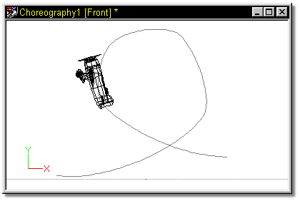
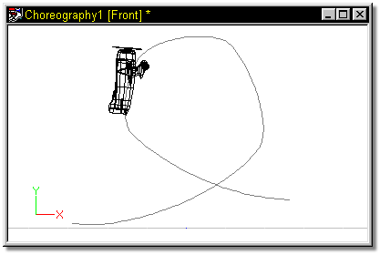
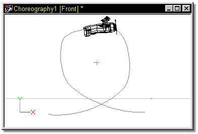

The “Aim Roll At” constraint aims the roll handle of the constrained bone at
the target bone’s pivot.
The “Aim Roll At” constraint aims the roll handle of the constrained bone at
the target bone’s pivot.
“Aim Roll At” has subtle uses that aren’t immediately apparent. A simple example would be to put “Aim Roll At” on a tank turret so that as the tank travels along a path, its turret remains pointed at a particular target, (a simple “Aim At” could cause the turret to also tilt - which would be prevented with Spherical Limits” constraints). More often, “Aim Roll At” is used in conjunction with other constraints to prevent something from happening.

During a loop-the-loop, an airplane constrained to a path would turn over partially along the path.


To keep the plane upside down at the top of the loop, add a null object by right clicking the Choreography name in the project workspace and selecting New >> Null Object. Place the null object in the center of the loop, and put an “Aim Roll At” constraint on the airplane.

Tell Me About:
About Constraints
"Aim At" Constraints
"Kinematic" Constraints
"Path" Constraints
"Translate To" Constraints
"Orient Like" Constraints
"Spherical Limits" Constraints
Blending Constraints
Constraint Order
Animating Constraints
Targets
Circular Constraints